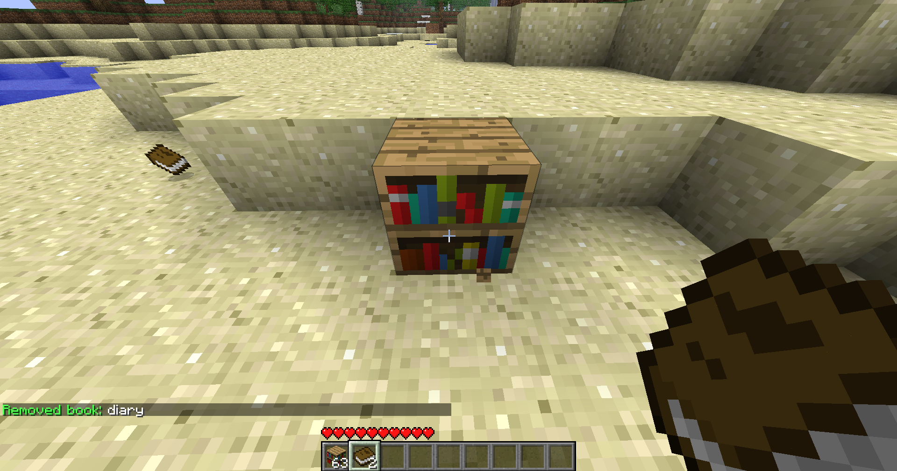

Beta 1.7.3 server tutorial
Vanilla
Food
Most noticeable there is no hunger bar instead food directly heals you.
Available foods are apple[note 1], bread, golden apple[note 2], raw porkchop, cooked porkchop, cookie[note 3], cake, raw fish, cooked fish.
1. ↑ Apples can only be obtained by killing notch
2. ↑ Golden apples can only be found in dungeons, or crafted with 8 gold blocks and an apple
3. ↑ Cocoa beans can only be found in dungeons
Cookies are the only stackable food, stacking up to 8
Nightmares
When sleeping the game attempts to spawn mobs in a 32*16*32 area around the bed, if the mobs have a path to the player that mob will be teleported to the player waking them up before day and attacking them
Weird Stuff
Fences are full blocks.
Fences only connect to other fences.
Fences cannot be placed mid air.
Left clicking on doors, trapdoors, levers and buttons will interact just like right click.
Bone meal is instant.
There are only 2 music discs (cat and 13).
There are only 2 flowers (dandelions and roses).
There are no top slabs, top trapdoors or bottom stairs.
Trapdoors require a solid block to be place on.
Logs always face up.
Swords break any block faster than the hand.
Wooden stairs, note blocks, fences, signs, wooden doors, trapdoors, ladders, crafting tables, jukeboxes, pistons and sticky pistons do not have a correct tool.
Wooden slabs are considered stone and therefore require a pickaxe.
Mossy Cobblestone(Moss Stone) is only obtainable from dungeons.
Some dyes are not in the game instead you use ink sac(black dye), cocoa beans(brown dye), bone meal(white dye) and lapis(blue dye).
Passive mobs spawn and despawn similar to hostile mobs, however they require grass and light.
Zombies drop feathers.
Zombie Pigmen drop cooked porkchop.
No attack cooldown and no critical hits.
Plugins
Creeper Heal
Creeper explosions will heal over time.
GoldenTouch
Using gold tools acts similarly to silk touch.
With a Golden Pickaxe you can get
stone, coal ore, lapis ore, redstone ore, diamond ore, glowstone,
ice, and glass.
With a Golden Shovel you can get
grass, snow, snow layer and clay.
With a Golden axe you can get bookshelf.
Inventory Sorting
To sort a chest you can either use /sortchest or
/srtc or hit the chest with a stick.
Use /sort for more commands.
Trash Can
Write [Disposal] on the first line of a sign to make a
trashcan
Right click on the sign to open the gui, exit gui to delete the items.
Block Protection
Signs, chests, furnaces and dispensers are private by default
Wooden doors, trapdoors, noteblocks, jukeboxes, stone buttons, levers,
repeaters and cakes can be made private by typing
/cprivate then left clicking on the block you wish to
private.
The block a door, trapdoor, sign, lever, stone button, repeater or cake is on is also protected.
Use /lwc for more commands.
Bookworm
Type /bw <title> while holding a single book to
create and title your book.
Type /bw <text> or just type in chat while holding
the book to write to the book.
Type /bw -help for more commands.
:: Skips to the next line.
The book creates a new page when the current one fills up automatically.
To delete the book just put it in the crafting grid.
Left click a bookshelf while holding a book to put it into the bookshelf.
Shift left click a bookshelf containing a book to pickup the book.
Left click a bookshelf containing a book while holding an empty book to copy the book from the bookshelf.
Chat Formatting
type & followed by either a number or letter to change the
text color.
Type /colors to see available colors.
Type /stats to see yours or another players balance, time
played, blocks broken and blocks placed.